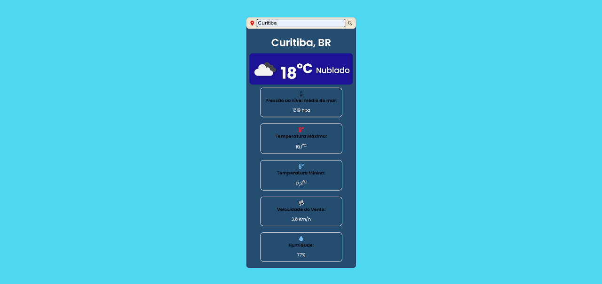
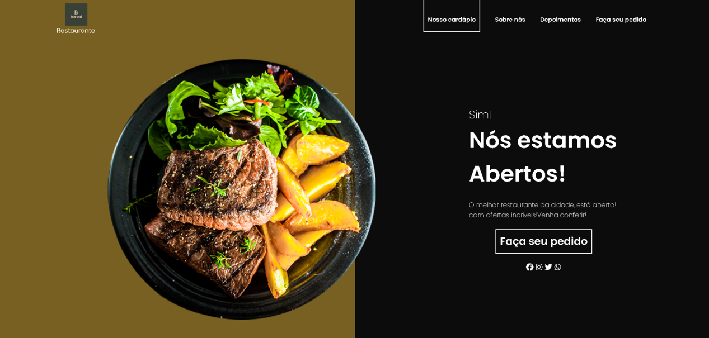
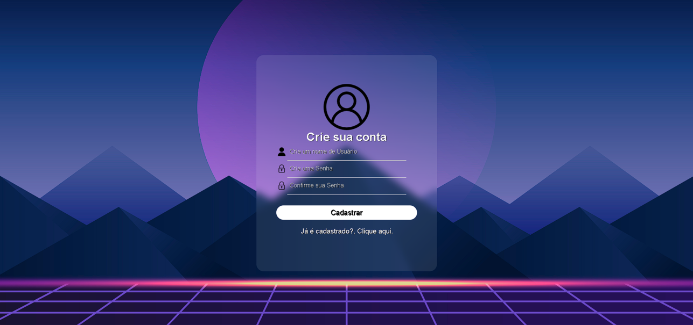
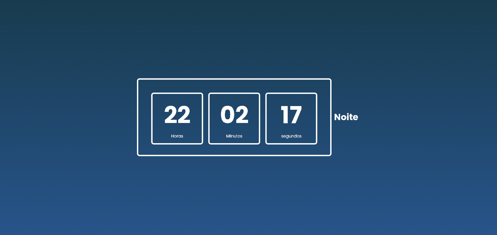
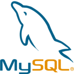

Conversor de Moeadas

Conversor das principais Moedas do mundo, neste projeto, utilizei a API Gratuita "Fixer.io API", fiz o consumo dela, e deixei a minha criatividade tomar conta ao criar este projeto, ele tem icones que auxiliam na interatividade do usuário e algumas pequenas animções com javascript.
Previsão do Tempo

Esse foi o meu primeiro projeto utilizando uma API, a “the open weather API”, usei a função fetch para fazer a requisição dos dados, e as converti usando JSON, quando o usuário digita uma cidade, é buscado os dados na API.
Landing Page Restaurante

Esta foi a minha primeira Landing Page Responsiva de um restaurante ficticio desenvolvida por min, esse projeto foi construido visando a experiência do usuário, ela tem um visual atrativo, com alguns efeitos utilizando a biblioteca javascript ScrollReveal.
Sistema de Login e Cadastro

- HTML
- CSS
- Javascript
- React.js
Este projeto foi totalmente desenvolvido por min usando a biblioteca React com Vite, o sistema de Cadastro e Login faz todas as validações por meio de funções e envio pelo handleSubmit, para a navegação entre páginas, utilizei o React-router-Dom.
Relógio Digital

Relógio digital desenvolvido e criado utilizando figma (para projetar o site) capaz de se adaptar aos diferentes periodos do dia, alterando sua cor de fundo conforme os diferentes períodos do dia: manhã, tarde, noite e madrugada.
Tecnologias

HTML5

CSS3

JavaScript

React.js

Git

Banco de dados Relacional
Habilidades
Criatividade
Criatividade no trabalho é a capacidade de pensar de forma inovadora para resolver problemas, criar novos produtos ou serviços, e melhorar processos.
Comunicação
Comunicação no trabalho é o processo de troca de informações entre as pessoas e os grupos de uma organização.
Organização
Organização no trabalho é o planejamento e a execução de tarefas de uma empresa, de forma a atingir os objetivos organizacionais.
Resiliência
Resiliência no trabalho é a capacidade de se adaptar e recuperar de situações adversas no ambiente profissional. É uma habilidade que envolve lidar com pressão, estresse, desafios e cobrança por resultados.
Determinação
Determinação no trabalho é a capacidade de se comprometer com um objetivo, persistir diante de obstáculos e manter o foco. É uma habilidade essencial para enfrentar desafios e aproveitar oportunidades no mercado de trabalho.
Vontade de apreender
A vontade de aprender tem suas raízes na curiosidade humana, na busca por respostas e na sede de conhecimento. É o desejo genuíno de adquirir novas informações, habilidades e experiências que agreguem valor à vida de uma pessoa.
Sobre mim
Olá eu sou Diego Biscaia, cursando 3º Semestre em Engenharia de Software, estou em busca da minha primeira oportunidade em desenvolvimento web, e ao longo da minha jornada rumo ao desenvolvimento web, busquei sempre colocar em prática o que eu apreendi nos meus estudos por meio de projetos pessoais, utilizando a minha criatividade na criação e desenvolvimento de sites com visuais bacanas e interativos, com implementação de novas funcionalidades e animações utilizando HTML,CSS e com bibliotecas javascript, tenho determinação em conquistar os meus objetivos, resiliência em não desistir perante as dificuldades e sim supera-las, estou sempre disposto a ouvir e apreender com a opnião de outras pessoas, gosto de trabalhar em equipe, procurando sempre manter meus sites bem organizados separando os arquivos em componentes, e tenho muita vontade de apreender novas tecnologias.